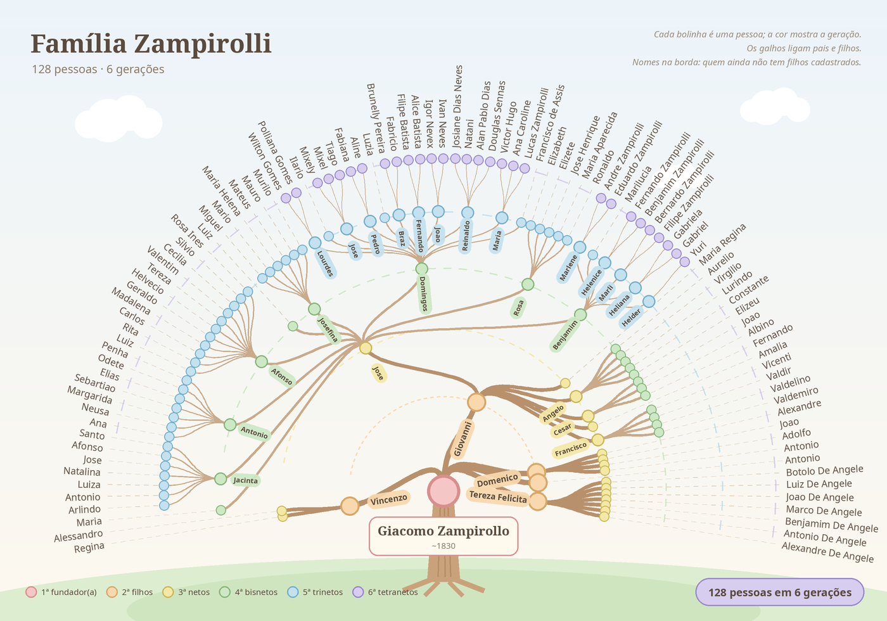
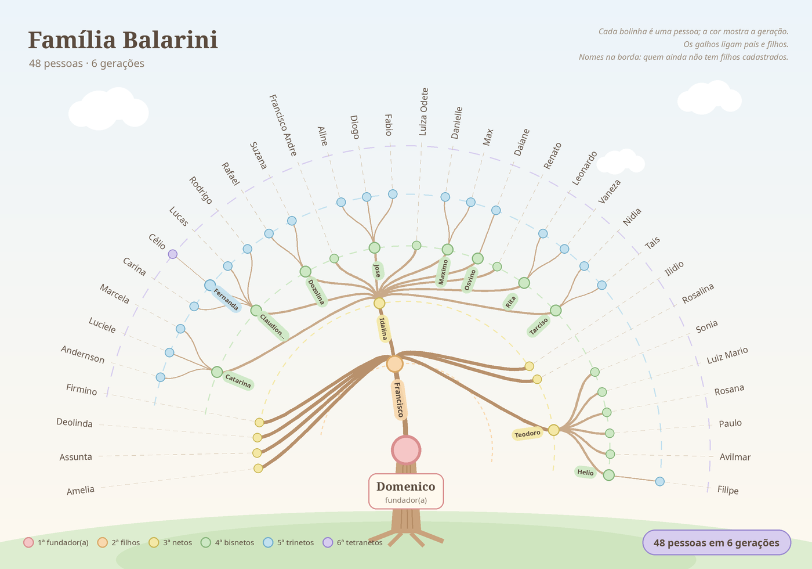
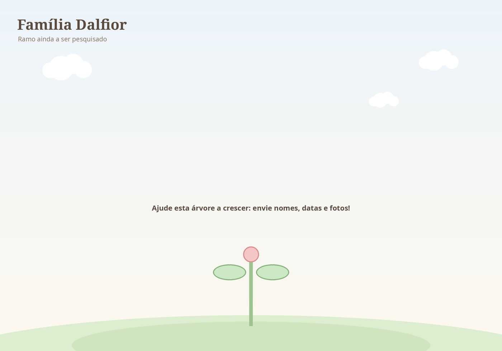
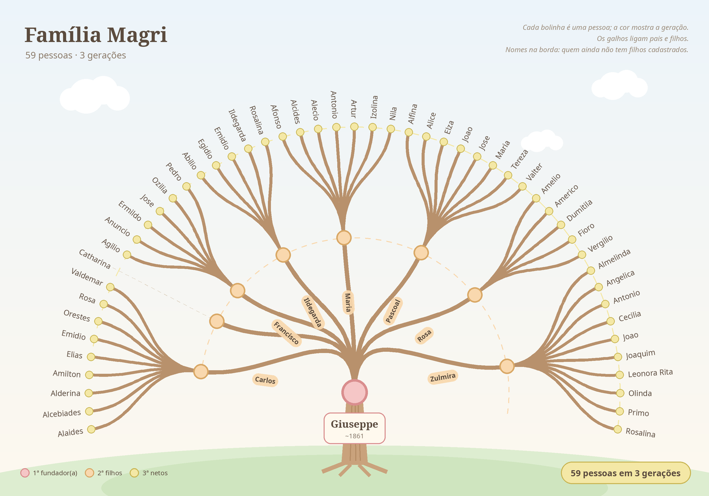

Árvores Genealógicas
Famílias Zampirolli, Balarini, Dalfior e Magri — da Itália ao Espírito Santo
- 238 pessoas
- 4 famílias
- 7 gerações
- 9 imigrantes identificados
- 107 fotos
- 9 documentos
Famílias

Zampirolli
Giacomo Zampirollo e Luigia Maria Braggion, de Pettorazza Grimani (Rovigo), chegaram a Vitória (ES) no navio Adria em 31/12/1888 com filhos, noras e netos. No Brasil o sobrenome passou a ser escrito Zampirolli.
131 pessoas · 7 gerações · início: Giacomo Zampirollo

Balarini
Família de Domenico Balarini, que se uniu aos Zampirolli e aos Magri no sul do Espírito Santo.
48 pessoas · 6 gerações · início: Domenico

Dalfior
Ramo ainda a ser pesquisado. Há uma lista de imigrantes Dal Fior na página.
0 pessoas · 0 gerações · início: —

Magri
Giuseppe Magri e Mansueta Polastri, de Mirandola (Modena), chegaram em 29/09/1891 no navio Adria e foram para Nova Mântua, em Alfredo Chaves (ES).
59 pessoas · 3 gerações · início: Giuseppe
Casamentos entre as famílias
Explore
Árvore interativa
Clique nas pessoas para abrir os galhos, geração por geração.
Lista completa
Todas as pessoas, em lista recolhível.
Linha do tempo
Nascimentos, chegadas e casamentos ao lado dos fatos históricos.
História e lugares
De Pettorazza Grimani e Mirandola ao sul do Espírito Santo, com fontes.
Como contribuir
Envie dados, fotos e histórias da sua família.